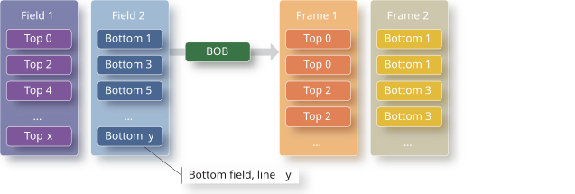

The video capture API includes enumerated values that specify deinterlacing behavior.
About deinterlacing
Deinterlacing can use a variety of techniques:
- Adaptive
- Use a motion-adaptive filter. This type of deinterlacing is usually done by the
hardware.
- Bob
- Take the lines of each field and double them. This technique retains the original temporal
resolution.
- Bob 2
- Discard one field out of each frame to improve the video quality. The temporal resolution is
halved, however.
- Weave
- Combine two consecutive fields together. The temporal resolution is halved: the resulting
frame rate is half of the original field rate.
- Weave 2
- Similar to weave, but the resulting frame rate is the same as the
original field rate.
Figure 1. Deinterlacing in BOB mode
